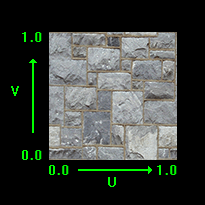

This tutorial will explain how to use texturing in OpenGL 4.0.
Texturing allows us to add photorealism to our scenes by applying photographs and other images onto polygon faces.
For example, in this tutorial we will take the following image:

And then apply it to the polygon from the previous tutorial to produce the following:

The format of the textures we will be using are .tga files.
This is a common graphics format that supports red, green, blue, and alpha channels.
You can create and edit Targa files with generally any image editing software.
And the file format is mostly straight forward.
And before we get into the code, we should discuss how texture mapping works.
To map pixels from the .tga image onto the polygon we use what is called the Texel Coordinate System.
This system converts the integer value of the pixel into a floating point value between 0.0f and 1.0f.
For example, if a texture width is 256 pixels wide then the first pixel will map to 0.0f, the 256th pixel
will map to 1.0f, and a middle pixel of 128 would map to 0.5f.
In the texel coordinate system the width value is named "U" and the height value is named "V".
The width goes from 0.0 on the left to 1.0 on the right.
The height goes from 0.0 on the bottom to 1.0 on the top.
For example, top left would be denoted as U 0.0, V 1.0 and bottom right would be denoted as U 1.0, V 0.0.
I have made a diagram below to illustrate this system:

Now that we have a basic understanding of how to map textures onto polygons, we can look at the updated frame work for this tutorial:
Updated Framework
The changes to the framework since the previous tutorial are the new TextureClass which is inside ModelClass, and the new TextureShaderClass which replaces the ColorShaderClass.

We'll start the code section by looking at the new GLSL texture shader first.
Texture.vs
The new GLSL texture vertex shader is very similar to the color vertex shader that we covered in the previous tutorial.
However instead of a color input and color output we now have a texture coordinate input and a texture coordinate output.
Also note that the texture coordinates use the vec2 type since it only contains two floats for the U and V coordinates whereas the color input and output had three floats for R, G, and B.
And just like the color in the previous tutorial we also pass the texture coordinates straight through to the pixel shader.
Otherwise, the vertex shader remains the same as the previous tutorial.
////////////////////////////////////////////////////////////////////////////////
// Filename: texture.vs
////////////////////////////////////////////////////////////////////////////////
#version 400
/////////////////////
// INPUT VARIABLES //
/////////////////////
in vec3 inputPosition;
in vec2 inputTexCoord;
//////////////////////
// OUTPUT VARIABLES //
//////////////////////
out vec2 texCoord;
///////////////////////
// UNIFORM VARIABLES //
///////////////////////
uniform mat4 worldMatrix;
uniform mat4 viewMatrix;
uniform mat4 projectionMatrix;
////////////////////////////////////////////////////////////////////////////////
// Vertex Shader
////////////////////////////////////////////////////////////////////////////////
void main(void)
{
// Calculate the position of the vertex against the world, view, and projection matrices.
gl_Position = vec4(inputPosition, 1.0f) * worldMatrix;
gl_Position = gl_Position * viewMatrix;
gl_Position = gl_Position * projectionMatrix;
// Store the texture coordinates for the pixel shader.
texCoord = inputTexCoord;
}
Texture.ps
The pixel shader has a new uniform variable called shaderTexture.
This is a texture sampler that allows us to access the Targa image that will be loaded into an OpenGL texture.
To access it the pixel shader uses a new function called "texture" which samples the pixel from the shaderTexture using the input texture coordinates from the vertex shader.
Note that OpenGL takes care of interpolating the texture coordinates to match up with the current pixel that we are drawing on the screen.
Once the pixel is sampled from the texture using the texture coordinates it is then returned as the final output pixel color.
////////////////////////////////////////////////////////////////////////////////
// Filename: texture.ps
////////////////////////////////////////////////////////////////////////////////
#version 400
/////////////////////
// INPUT VARIABLES //
/////////////////////
in vec2 texCoord;
//////////////////////
// OUTPUT VARIABLES //
//////////////////////
out vec4 outputColor;
///////////////////////
// UNIFORM VARIABLES //
///////////////////////
uniform sampler2D shaderTexture;
////////////////////////////////////////////////////////////////////////////////
// Pixel Shader
////////////////////////////////////////////////////////////////////////////////
void main(void)
{
vec4 textureColor;
// Sample the pixel color from the texture using the sampler at this texture coordinate location.
textureColor = texture(shaderTexture, texCoord);
outputColor = textureColor;
}
Textureshaderclass.h
The TextureShaderClass is just an updated version of the ColorShaderClass from the previous tutorial modified to handle texture coordinates instead of color components.
////////////////////////////////////////////////////////////////////////////////
// Filename: textureshaderclass.h
////////////////////////////////////////////////////////////////////////////////
#ifndef _TEXTURESHADERCLASS_H_
#define _TEXTURESHADERCLASS_H_
//////////////
// INCLUDES //
//////////////
#include <iostream>
using namespace std;
///////////////////////
// MY CLASS INCLUDES //
///////////////////////
#include "openglclass.h"
////////////////////////////////////////////////////////////////////////////////
// Class name: TextureShaderClass
////////////////////////////////////////////////////////////////////////////////
class TextureShaderClass
{
public:
TextureShaderClass();
TextureShaderClass(const TextureShaderClass&);
~TextureShaderClass();
bool Initialize(OpenGLClass*);
void Shutdown();
bool SetShaderParameters(float*, float*, float*);
private:
bool InitializeShader(char*, char*);
void ShutdownShader();
char* LoadShaderSourceFile(char*);
void OutputShaderErrorMessage(unsigned int, char*);
void OutputLinkerErrorMessage(unsigned int);
private:
OpenGLClass* m_OpenGLPtr;
unsigned int m_vertexShader;
unsigned int m_fragmentShader;
unsigned int m_shaderProgram;
};
#endif
Textureshaderclass.cpp
The majority of the TextureShaderClass functions will look exactly like the ColorShaderClass with just a couple modifications to handle texturing.
I will point out the changes.
////////////////////////////////////////////////////////////////////////////////
// Filename: textureshaderclass.cpp
////////////////////////////////////////////////////////////////////////////////
#include "textureshaderclass.h"
TextureShaderClass::TextureShaderClass()
{
m_OpenGLPtr = 0;
}
TextureShaderClass::TextureShaderClass(const TextureShaderClass& other)
{
}
TextureShaderClass::~TextureShaderClass()
{
}
bool TextureShaderClass::Initialize(OpenGLClass* OpenGL)
{
char vsFilename[128];
char psFilename[128];
bool result;
// Store the pointer to the OpenGL object.
m_OpenGLPtr = OpenGL;
The new texture.vs and texture.ps GLSL files are loaded for this shader.
// Set the location and names of the shader files.
strcpy(vsFilename, "../Engine/texture.vs");
strcpy(psFilename, "../Engine/texture.ps");
// Initialize the vertex and pixel shaders.
result = InitializeShader(vsFilename, psFilename);
if(!result)
{
return false;
}
return true;
}
void TextureShaderClass::Shutdown()
{
// Shutdown the shader.
ShutdownShader();
// Release the pointer to the OpenGL object.
m_OpenGLPtr = 0;
return;
}
bool TextureShaderClass::InitializeShader(char* vsFilename, char* fsFilename)
{
const char* vertexShaderBuffer;
const char* fragmentShaderBuffer;
int status;
// Load the vertex shader source file into a text buffer.
vertexShaderBuffer = LoadShaderSourceFile(vsFilename);
if(!vertexShaderBuffer)
{
return false;
}
// Load the fragment shader source file into a text buffer.
fragmentShaderBuffer = LoadShaderSourceFile(fsFilename);
if(!fragmentShaderBuffer)
{
return false;
}
// Create a vertex and fragment shader object.
m_vertexShader = m_OpenGLPtr->glCreateShader(GL_VERTEX_SHADER);
m_fragmentShader = m_OpenGLPtr->glCreateShader(GL_FRAGMENT_SHADER);
// Copy the shader source code strings into the vertex and fragment shader objects.
m_OpenGLPtr->glShaderSource(m_vertexShader, 1, &vertexShaderBuffer, NULL);
m_OpenGLPtr->glShaderSource(m_fragmentShader, 1, &fragmentShaderBuffer, NULL);
// Release the vertex and fragment shader buffers.
delete [] vertexShaderBuffer;
vertexShaderBuffer = 0;
delete [] fragmentShaderBuffer;
fragmentShaderBuffer = 0;
// Compile the shaders.
m_OpenGLPtr->glCompileShader(m_vertexShader);
m_OpenGLPtr->glCompileShader(m_fragmentShader);
// Check to see if the vertex shader compiled successfully.
m_OpenGLPtr->glGetShaderiv(m_vertexShader, GL_COMPILE_STATUS, &status);
if(status != 1)
{
// If it did not compile then write the syntax error message out to a text file for review.
OutputShaderErrorMessage(m_vertexShader, vsFilename);
return false;
}
// Check to see if the fragment shader compiled successfully.
m_OpenGLPtr->glGetShaderiv(m_fragmentShader, GL_COMPILE_STATUS, &status);
if(status != 1)
{
// If it did not compile then write the syntax error message out to a text file for review.
OutputShaderErrorMessage(m_fragmentShader, fsFilename);
return false;
}
// Create a shader program object.
m_shaderProgram = m_OpenGLPtr->glCreateProgram();
// Attach the vertex and fragment shader to the program object.
m_OpenGLPtr->glAttachShader(m_shaderProgram, m_vertexShader);
m_OpenGLPtr->glAttachShader(m_shaderProgram, m_fragmentShader);
The second shader input variable has been changed to match the input in the vertex shader for inputTexCoord.
// Bind the shader input variables.
m_OpenGLPtr->glBindAttribLocation(m_shaderProgram, 0, "inputPosition");
m_OpenGLPtr->glBindAttribLocation(m_shaderProgram, 1, "inputTexCoord");
// Link the shader program.
m_OpenGLPtr->glLinkProgram(m_shaderProgram);
// Check the status of the link.
m_OpenGLPtr->glGetProgramiv(m_shaderProgram, GL_LINK_STATUS, &status);
if(status != 1)
{
// If it did not link then write the syntax error message out to a text file for review.
OutputLinkerErrorMessage(m_shaderProgram);
return false;
}
return true;
}
void TextureShaderClass::ShutdownShader()
{
// Detach the vertex and fragment shaders from the program.
m_OpenGLPtr->glDetachShader(m_shaderProgram, m_vertexShader);
m_OpenGLPtr->glDetachShader(m_shaderProgram, m_fragmentShader);
// Delete the vertex and fragment shaders.
m_OpenGLPtr->glDeleteShader(m_vertexShader);
m_OpenGLPtr->glDeleteShader(m_fragmentShader);
// Delete the shader program.
m_OpenGLPtr->glDeleteProgram(m_shaderProgram);
return;
}
char* TextureShaderClass::LoadShaderSourceFile(char* filename)
{
FILE* filePtr;
char* buffer;
long fileSize, count;
int error;
// Open the shader file for reading in text modee.
filePtr = fopen(filename, "r");
if(filePtr == NULL)
{
return 0;
}
// Go to the end of the file and get the size of the file.
fseek(filePtr, 0, SEEK_END);
fileSize = ftell(filePtr);
// Initialize the buffer to read the shader source file into, adding 1 for an extra null terminator.
buffer = new char[fileSize + 1];
// Return the file pointer back to the beginning of the file.
fseek(filePtr, 0, SEEK_SET);
// Read the shader text file into the buffer.
count = fread(buffer, 1, fileSize, filePtr);
if(count != fileSize)
{
return 0;
}
// Close the file.
error = fclose(filePtr);
if(error != 0)
{
return 0;
}
// Null terminate the buffer.
buffer[fileSize] = '\0';
return buffer;
}
void TextureShaderClass::OutputShaderErrorMessage(unsigned int shaderId, char* shaderFilename)
{
long count;
int logSize, error;
char* infoLog;
FILE* filePtr;
// Get the size of the string containing the information log for the failed shader compilation message.
m_OpenGLPtr->glGetShaderiv(shaderId, GL_INFO_LOG_LENGTH, &logSize);
// Increment the size by one to handle also the null terminator.
logSize++;
// Create a char buffer to hold the info log.
infoLog = new char[logSize];
// Now retrieve the info log.
m_OpenGLPtr->glGetShaderInfoLog(shaderId, logSize, NULL, infoLog);
// Open a text file to write the error message to.
filePtr = fopen("shader-error.txt", "w");
if(filePtr == NULL)
{
cout << "Error opening shader error message output file." << endl;
return;
}
// Write out the error message.
count = fwrite(infoLog, sizeof(char), logSize, filePtr);
if(count != logSize)
{
cout << "Error writing shader error message output file." << endl;
return;
}
// Close the file.
error = fclose(filePtr);
if(error != 0)
{
cout << "Error closing shader error message output file." << endl;
return;
}
// Notify the user to check the text file for compile errors.
cout << "Error compiling shader. Check shader-error.txt for error message. Shader filename: " << shaderFilename << endl;
return;
}
void TextureShaderClass::OutputLinkerErrorMessage(unsigned int programId)
{
long count;
FILE* filePtr;
int logSize, error;
char* infoLog;
// Get the size of the string containing the information log for the failed shader compilation message.
m_OpenGLPtr->glGetProgramiv(programId, GL_INFO_LOG_LENGTH, &logSize);
// Increment the size by one to handle also the null terminator.
logSize++;
// Create a char buffer to hold the info log.
infoLog = new char[logSize];
// Now retrieve the info log.
m_OpenGLPtr->glGetProgramInfoLog(programId, logSize, NULL, infoLog);
// Open a file to write the error message to.
filePtr = fopen("linker-error.txt", "w");
if(filePtr == NULL)
{
cout << "Error opening linker error message output file." << endl;
return;
}
// Write out the error message.
count = fwrite(infoLog, sizeof(char), logSize, filePtr);
if(count != logSize)
{
cout << "Error writing linker error message output file." << endl;
return;
}
// Close the file.
error = fclose(filePtr);
if(error != 0)
{
cout << "Error closing linker error message output file." << endl;
return;
}
// Pop a message up on the screen to notify the user to check the text file for linker errors.
cout << "Error linking shader program. Check linker-error.txt for message." << endl;
return;
}
bool TextureShaderClass::SetShaderParameters(float* worldMatrix, float* viewMatrix, float* projectionMatrix)
{
float tpWorldMatrix[16], tpViewMatrix[16], tpProjectionMatrix[16];
int location;
// Transpose the matrices to prepare them for the shader.
m_OpenGLPtr->MatrixTranspose(tpWorldMatrix, worldMatrix);
m_OpenGLPtr->MatrixTranspose(tpViewMatrix, viewMatrix);
m_OpenGLPtr->MatrixTranspose(tpProjectionMatrix, projectionMatrix);
// Install the shader program as part of the current rendering state.
m_OpenGLPtr->glUseProgram(m_shaderProgram);
// Set the world matrix in the vertex shader.
location = m_OpenGLPtr->glGetUniformLocation(m_shaderProgram, "worldMatrix");
if(location == -1)
{
cout << "World matrix not set." << endl;
}
m_OpenGLPtr->glUniformMatrix4fv(location, 1, false, tpWorldMatrix);
// Set the view matrix in the vertex shader.
location = m_OpenGLPtr->glGetUniformLocation(m_shaderProgram, "viewMatrix");
if(location == -1)
{
cout << "View matrix not set." << endl;
}
m_OpenGLPtr->glUniformMatrix4fv(location, 1, false, tpViewMatrix);
// Set the projection matrix in the vertex shader.
location = m_OpenGLPtr->glGetUniformLocation(m_shaderProgram, "projectionMatrix");
if(location == -1)
{
cout << "Projection matrix not set." << endl;
}
m_OpenGLPtr->glUniformMatrix4fv(location, 1, false, tpProjectionMatrix);
The location in the pixel shader for the shaderTexture variable is obtained here and then the texture unit is set.
Since we only have one texture, we will use texture unit zero for it when we set it using glUniform1i.
The texture can now be sampled in the pixel shader.
// Set the texture in the pixel shader to use the data from the first texture unit.
location = m_OpenGLPtr->glGetUniformLocation(m_shaderProgram, "shaderTexture");
if(location == -1)
{
cout << "Shader texture not set." << endl;
}
m_OpenGLPtr->glUniform1i(location, 0);
return true;
}
Textureclass.h
The TextureClass encapsulates the loading, unloading, and accessing of a single texture resource.
For each texture needed an object of this class must be instantiated.
////////////////////////////////////////////////////////////////////////////////
// Filename: textureclass.h
////////////////////////////////////////////////////////////////////////////////
#ifndef _TEXTURECLASS_H_
#define _TEXTURECLASS_H_
//////////////
// INCLUDES //
//////////////
#include <stdio.h>
///////////////////////
// MY CLASS INCLUDES //
///////////////////////
#include "openglclass.h"
////////////////////////////////////////////////////////////////////////////////
// Class name: TextureClass
////////////////////////////////////////////////////////////////////////////////
class TextureClass
{
private:
The image format we use is called Targa and has a unique header that we require this structure for.
struct TargaHeader
{
unsigned char data1[12];
unsigned short width;
unsigned short height;
unsigned char bpp;
unsigned char data2;
};
public:
TextureClass();
TextureClass(const TextureClass&);
~TextureClass();
The first two functions will load a texture from a given file name, and then unload that texture later when it is no longer needed.
The third function sets the texture as active for rendering.
And finally, the last two functions provide the size of the texture to calling functions.
bool Initialize(OpenGLClass*, char*, bool);
void Shutdown();
void SetTexture(OpenGLClass*, unsigned int);
int GetWidth();
int GetHeight();
private:
The LoadTarga functions loads a Targa image into an OpenGL texture.
If you were to use other formats such as .bmp, .dds, and so forth you would place the loading function here.
bool LoadTarga32Bit(OpenGLClass*, char*, bool);
private:
The loaded boolean indicates if a texture has been loaded into this class object or not.
The m_textureID is the ID number of the texture as OpenGL sees it.
And then the width and height are the dimensions of the texture.
unsigned int m_textureID;
int m_width, m_height;
bool m_loaded;
};
#endif
Textureclass.cpp
////////////////////////////////////////////////////////////////////////////////
// Filename: textureclass.cpp
////////////////////////////////////////////////////////////////////////////////
#include "textureclass.h"
The class constructor will initialize the loaded boolean to false so that we know there has not been a texture loaded yet.
TextureClass::TextureClass()
{
m_loaded = false;
}
TextureClass::TextureClass(const TextureClass& other)
{
}
TextureClass::~TextureClass()
{
}
Initialize takes in the OpenGL pointer, the file name of the texture, and a boolean value indicating if the texture should wrap or clamp the colors at the edges.
It then loads the Targa file by calling the LoadTarga function.
The texture can now be used to render with.
bool TextureClass::Initialize(OpenGLClass* OpenGL, char* filename, bool wrap)
{
bool result;
// Load the texture from the file.
result = LoadTarga32Bit(OpenGL, filename, wrap);
if(!result)
{
return false;
}
// Set that the texture is loaded.
m_loaded = true;
return true;
}
The Shutdown function releases the texture resource if it had been successfully loaded earlier.
void TextureClass::Shutdown()
{
// If the texture was loaded then make sure to release it on shutdown.
if(m_loaded)
{
glDeleteTextures(1, &m_textureID);
m_loaded = false;
}
return;
}
This is our Targa image loading function.
Once again note that Targa images need the red and blue channel flipped before using.
So here we will open the file, read it into an array, and then take that array data and load it into the m_targaData array in the correct order.
Note also that we are purposely only dealing with 32-bit Targa files that have alpha channels.
This function will reject Targas that are saved as 24-bit or any other format.
bool TextureClass::LoadTarga32Bit(OpenGLClass* OpenGL, char* filename, bool wrap)
{
TargaHeader targaFileHeader;
FILE* filePtr;
int bpp, error, index, i, j;
unsigned long count, imageSize;
unsigned char* targaData;
unsigned char* targaImage;
First read the 32-bit Targa file into a buffer.
// Open the targa file for reading in binary.
filePtr = fopen(filename, "rb");
if(filePtr == NULL)
{
return false;
}
// Read in the file header.
count = fread(&targaFileHeader, sizeof(TargaHeader), 1, filePtr);
if(count != 1)
{
return false;
}
// Get the important information from the header.
m_width = (int)targaFileHeader.width;
m_height = (int)targaFileHeader.height;
bpp = (int)targaFileHeader.bpp;
// Check that it is 32 bit and not 24 bit.
if(bpp != 32)
{
return false;
}
// Calculate the size of the 32 bit image data.
imageSize = m_width * m_height * 4;
// Allocate memory for the targa image data.
targaImage = new unsigned char[imageSize];
// Read in the targa image data.
count = fread(targaImage, 1, imageSize, filePtr);
if(count != imageSize)
{
return false;
}
// Close the file.
error = fclose(filePtr);
if(error != 0)
{
return false;
}
Now use a second buffer to flip the image data from the first buffer in the correct order.
// Allocate memory for the targa destination data.
targaData = new unsigned char[imageSize];
// Initialize the index into the targa destination data array.
index = 0;
// Now copy the targa image data into the targa destination array in the correct order since the targa format is not stored in the RGBA order.
for(j=0; j<m_height; j++)
{
for(i=0; i<m_width; i++)
{
targaData[index + 0] = targaImage[index + 2]; // Red.
targaData[index + 1] = targaImage[index + 1]; // Green.
targaData[index + 2] = targaImage[index + 0]; // Blue
targaData[index + 3] = targaImage[index + 3]; // Alpha
// Increment the indexes into the targa data.
index += 4;
}
}
// Release the targa image data now that it was copied into the destination array.
delete [] targaImage;
targaImage = 0;
Now that the buffer contains the correct image data, we create an OpenGL texture object and copy the buffer into that texture object.
// Set the active texture unit in which to store the data.
OpenGL->glActiveTexture(GL_TEXTURE0 + 0);
// Generate an ID for the texture.
glGenTextures(1, &m_textureID);
// Bind the texture as a 2D texture.
glBindTexture(GL_TEXTURE_2D, m_textureID);
// Load the image data into the texture unit.
glTexImage2D(GL_TEXTURE_2D, 0, GL_RGBA, m_width, m_height, 0, GL_RGBA, GL_UNSIGNED_BYTE, targaData);
Once the texture has been loaded, we can set the wrap, filtering, and generate mipmaps for it.
// Set the texture color to either wrap around or clamp to the edge.
if(wrap)
{
glTexParameteri(GL_TEXTURE_2D, GL_TEXTURE_WRAP_S, GL_REPEAT);
glTexParameteri(GL_TEXTURE_2D, GL_TEXTURE_WRAP_T, GL_REPEAT);
}
else
{
glTexParameteri(GL_TEXTURE_2D, GL_TEXTURE_WRAP_S, GL_CLAMP_TO_EDGE);
glTexParameteri(GL_TEXTURE_2D, GL_TEXTURE_WRAP_T, GL_CLAMP_TO_EDGE);
}
// Set the texture filtering.
glTexParameteri(GL_TEXTURE_2D, GL_TEXTURE_MAG_FILTER, GL_LINEAR);
glTexParameteri(GL_TEXTURE_2D, GL_TEXTURE_MIN_FILTER, GL_LINEAR_MIPMAP_LINEAR);
// Generate mipmaps for the texture.
OpenGL->glGenerateMipmap(GL_TEXTURE_2D);
// Release the targa image data.
delete [] targaData;
targaData = 0;
return true;
}
The SetTexture function sets this texture as the current rendering texture in the specific texture unit.
For this tutorial we only use one texture so it will be stored in texture unit zero.
void TextureClass::SetTexture(OpenGLClass* OpenGL, unsigned int textureUnit)
{
if(m_loaded)
{
// Set the texture unit we are working with.
OpenGL->glActiveTexture(GL_TEXTURE0 + textureUnit);
// Bind the texture as a 2D texture.
glBindTexture(GL_TEXTURE_2D, m_textureID);
}
return;
}
int TextureClass::GetWidth()
{
return m_width;
}
int TextureClass::GetHeight()
{
return m_height;
}
Modelclass.h
The ModelClass has changed since the previous tutorial so that it can now accommodate texturing.
////////////////////////////////////////////////////////////////////////////////
// Filename: modelclass.h
////////////////////////////////////////////////////////////////////////////////
#ifndef _MODELCLASS_H_
#define _MODELCLASS_H_
//////////////
// INCLUDES //
//////////////
#include <fstream>
using namespace std;
The TextureClass header is now included in the ModelClass header.
///////////////////////
// MY CLASS INCLUDES //
///////////////////////
#include "textureclass.h"
////////////////////////////////////////////////////////////////////////////////
// Class Name: ModelClass
////////////////////////////////////////////////////////////////////////////////
class ModelClass
{
private:
The VertexType has replaced the color component with texture coordinates.
struct VertexType
{
float x, y, z;
float tu, tv;
};
public:
ModelClass();
ModelClass(const ModelClass&);
~ModelClass();
The Initialize function now takes a new filename input related to the texture.
It also takes in a boolean to indicate whether the texture should wrap or clamp.
bool Initialize(OpenGLClass*, char*, bool);
void Shutdown();
void Render();
We hajve a SetTexture function for setting the model's texture as active in the pixel shader.
void SetTexture(unsigned int);
private:
bool InitializeBuffers();
void ShutdownBuffers();
void RenderBuffers();
ModelClass also now has both a private LoadTexture and ReleaseTexture for loading and releasing the texture that will be used to render this model.
bool LoadTexture(char*, bool);
void ReleaseTexture();
private:
OpenGLClass* m_OpenGLPtr;
int m_vertexCount, m_indexCount;
unsigned int m_vertexArrayId, m_vertexBufferId, m_indexBufferId;
And finally, the new m_Texture variable is used for loading, releasing, and accessing the texture resource for this model.
TextureClass* m_Texture;
};
#endif
Modelclass.cpp
////////////////////////////////////////////////////////////////////////////////
// Filename: modelclass.cpp
////////////////////////////////////////////////////////////////////////////////
#include "modelclass.h"
ModelClass::ModelClass()
{
m_OpenGLPtr = 0;
The class constructor now initializes the new texture object to null.
m_Texture = 0;
}
ModelClass::ModelClass(const ModelClass& other)
{
}
ModelClass::~ModelClass()
{
}
Initialize now takes as input the file name of the .tga texture that the model will be using.
It also takes a boolean indicating if the texture should wrap or clamp.
bool ModelClass::Initialize(OpenGLClass* OpenGL, char* textureFilename, bool wrap)
{
bool result;
// Store a pointer to the OpenGL object.
m_OpenGLPtr = OpenGL;
// Initialize the vertex and index buffer that hold the geometry for the triangle.
result = InitializeBuffers();
if(!result)
{
return false;
}
The Initialize function calls a new private function named LoadTexture that will load the texture.
// Load the texture for this model.
result = LoadTexture(textureFilename, wrap);
if(!result)
{
return false;
}
return true;
}
void ModelClass::Shutdown()
{
The Shutdown function now calls the new private function to release the texture object that was loaded during initialization.
// Release the texture used for this model.
ReleaseTexture();
// Release the vertex and index buffers.
ShutdownBuffers();
// Release the pointer to the OpenGL object.
m_OpenGLPtr = 0;
return;
}
void ModelClass::Render()
{
// Put the vertex and index buffers on the graphics pipeline to prepare them for drawing.
RenderBuffers();
return;
}
bool ModelClass::InitializeBuffers()
{
VertexType* vertices;
unsigned int* indices;
// Set the number of vertices in the vertex array.
m_vertexCount = 3;
// Set the number of indices in the index array.
m_indexCount = 3;
// Create the vertex array.
vertices = new VertexType[m_vertexCount];
// Create the index array.
indices = new unsigned int[m_indexCount];
The vertex array now has a texture coordinate component instead of a color component.
The texture vector is always U first and V second.
For example, the first texture coordinate is bottom left of the triangle which corresponds to U 0.0, V 0.0.
Use the diagram at the top of this page to figure out what your coordinates need to be.
Note that you can change the coordinates to map any part of the texture to any part of the polygon face.
In this tutorial I'm just doing a direct mapping for simplicity reasons.
// Load the vertex array with data.
// Bottom left.
vertices[0].x = -1.0f; // Position.
vertices[0].y = -1.0f;
vertices[0].z = 0.0f;
vertices[0].tu = 0.0f; // Texture
vertices[0].tv = 0.0f;
// Top middle.
vertices[1].x = 0.0f; // Position.
vertices[1].y = 1.0f;
vertices[1].z = 0.0f;
vertices[1].tu = 0.5f; // Texture
vertices[1].tv = 1.0f;
// Bottom right.
vertices[2].x = 1.0f; // Position.
vertices[2].y = -1.0f;
vertices[2].z = 0.0f;
vertices[2].tu = 1.0f; // Texture
vertices[2].tv = 0.0f;
// Load the index array with data.
indices[0] = 0; // Bottom left.
indices[1] = 1; // Top middle.
indices[2] = 2; // Bottom right.
// Allocate an OpenGL vertex array object.
m_OpenGLPtr->glGenVertexArrays(1, &m_vertexArrayId);
// Bind the vertex array object to store all the buffers and vertex attributes we create here.
m_OpenGLPtr->glBindVertexArray(m_vertexArrayId);
// Generate an ID for the vertex buffer.
m_OpenGLPtr->glGenBuffers(1, &m_vertexBufferId);
// Bind the vertex buffer and load the vertex (position and color) data into the vertex buffer.
m_OpenGLPtr->glBindBuffer(GL_ARRAY_BUFFER, m_vertexBufferId);
m_OpenGLPtr->glBufferData(GL_ARRAY_BUFFER, m_vertexCount * sizeof(VertexType), vertices, GL_STATIC_DRAW);
Although enabling the second vertex attribute hasn't changed, it now means something different since it is now texture coordinates and no longer color components.
// Enable the two vertex array attributes.
m_OpenGLPtr->glEnableVertexAttribArray(0); // Vertex position.
m_OpenGLPtr->glEnableVertexAttribArray(1); // Texture coordinates.
// Specify the location and format of the position portion of the vertex buffer.
m_OpenGLPtr->glVertexAttribPointer(0, 3, GL_FLOAT, false, sizeof(VertexType), 0);
When we specify the layout of the texture coordinate portion of the vertex buffer, we need to change the second argument to 2 since there are only two floats now instead of three.
Otherwise, the rest of the inputs remain the same.
// Specify the location and format of the texture coordinates portion of the vertex buffer.
m_OpenGLPtr->glVertexAttribPointer(1, 2, GL_FLOAT, false, sizeof(VertexType), (unsigned char*)NULL + (3 * sizeof(float)));
// Generate an ID for the index buffer.
m_OpenGLPtr->glGenBuffers(1, &m_indexBufferId);
// Bind the index buffer and load the index data into it.
m_OpenGLPtr->glBindBuffer(GL_ELEMENT_ARRAY_BUFFER, m_indexBufferId);
m_OpenGLPtr->glBufferData(GL_ELEMENT_ARRAY_BUFFER, m_indexCount* sizeof(unsigned int), indices, GL_STATIC_DRAW);
// Now that the buffers have been loaded we can release the array data.
delete [] vertices;
vertices = 0;
delete [] indices;
indices = 0;
return true;
}
void ModelClass::ShutdownBuffers()
{
// Release the vertex array object.
m_OpenGLPtr->glBindVertexArray(0);
m_OpenGLPtr->glDeleteVertexArrays(1, &m_vertexArrayId);
// Release the vertex buffer.
m_OpenGLPtr->glBindBuffer(GL_ARRAY_BUFFER, 0);
m_OpenGLPtr->glDeleteBuffers(1, &m_vertexBufferId);
// Release the index buffer.
m_OpenGLPtr->glBindBuffer(GL_ELEMENT_ARRAY_BUFFER, 0);
m_OpenGLPtr->glDeleteBuffers(1, &m_indexBufferId);
return;
}
void ModelClass::RenderBuffers()
{
// Bind the vertex array object that stored all the information about the vertex and index buffers.
m_OpenGLPtr->glBindVertexArray(m_vertexArrayId);
// Render the vertex buffer using the index buffer.
glDrawElements(GL_TRIANGLES, m_indexCount, GL_UNSIGNED_INT, 0);
return;
}
LoadTexture is a new private function that will create the texture object and then initialize it with the input file name provided.
This function is called during initialization.
bool ModelClass::LoadTexture(char* textureFilename, bool wrap)
{
bool result;
// Create and initialize the texture object.
m_Texture = new TextureClass;
result = m_Texture->Initialize(m_OpenGLPtr, textureFilename, wrap);
if(!result)
{
return false;
}
return true;
}
The ReleaseTexture function will release the texture object that was created and loaded during the LoadTexture function.
void ModelClass::ReleaseTexture()
{
// Release the texture object.
if(m_Texture)
{
m_Texture->Shutdown();
delete m_Texture;
m_Texture = 0;
}
return;
}
The SetTexture function makes the texture active in the pixel shader.
It uses the input textureUnit to set which texture unit this texture should be active in.
void ModelClass::SetTexture(unsigned int textureUnit)
{
// Set the texture for the model.
m_Texture->SetTexture(m_OpenGLPtr, textureUnit);
return;
}
Applicationclass.h
////////////////////////////////////////////////////////////////////////////////
// Filename: applicationclass.h
////////////////////////////////////////////////////////////////////////////////
#ifndef _APPLICATIONCLASS_H_
#define _APPLICATIONCLASS_H_
/////////////
// GLOBALS //
/////////////
const bool FULL_SCREEN = false;
const bool VSYNC_ENABLED = true;
const float SCREEN_NEAR = 0.3f;
const float SCREEN_DEPTH = 1000.0f;
///////////////////////
// MY CLASS INCLUDES //
///////////////////////
#include "inputclass.h"
#include "openglclass.h"
#include "modelclass.h"
#include "cameraclass.h"
The ApplicationClass now includes the new TextureShaderClass header and the ColorShaderClass header has been removed.
#include "textureshaderclass.h"
////////////////////////////////////////////////////////////////////////////////
// Class Name: ApplicationClass
////////////////////////////////////////////////////////////////////////////////
class ApplicationClass
{
public:
ApplicationClass();
ApplicationClass(const ApplicationClass&);
~ApplicationClass();
bool Initialize(Display*, Window, int, int);
void Shutdown();
bool Frame(InputClass*);
private:
bool Render();
private:
OpenGLClass* m_OpenGL;
ModelClass* m_Model;
CameraClass* m_Camera;
A new TextureShaderClass private object has been added.
TextureShaderClass* m_TextureShader;
};
#endif
Applicationclass.cpp
////////////////////////////////////////////////////////////////////////////////
// Filename: applicationclass.cpp
////////////////////////////////////////////////////////////////////////////////
#include "applicationclass.h"
ApplicationClass::ApplicationClass()
{
m_OpenGL = 0;
m_Model = 0;
m_Camera = 0;
m_TextureShader = 0;
}
ApplicationClass::ApplicationClass(const ApplicationClass& other)
{
}
ApplicationClass::~ApplicationClass()
{
}
bool ApplicationClass::Initialize(Display* display, Window win, int screenWidth, int screenHeight)
{
char textureFilename[128];
bool result;
// Create and initialize the OpenGL object.
m_OpenGL = new OpenGLClass;
result = m_OpenGL->Initialize(display, win, screenWidth, screenHeight, SCREEN_NEAR, SCREEN_DEPTH, VSYNC_ENABLED);
if(!result)
{
cout << "Error: Could not initialize the OpenGL object." << endl;
return false;
}
// Create and initialize the camera object.
m_Camera = new CameraClass;
m_Camera->SetPosition(0.0f, 0.0f, -5.0f);
m_Camera->Render();
The ModelClass::Initialize function now takes in the name of the texture that will be used for rendering the model.
It also takes a boolean indicating if it should wrap or clamp the texture edges.
We want it to clamp most of the time so this is set to false.
// Set the file name of the texture.
strcpy(textureFilename, "../Engine/data/stone01.tga");
// Create and initialize the model object.
m_Model = new ModelClass;
result = m_Model->Initialize(m_OpenGL, textureFilename, false);
if(!result)
{
cout << "Error: Could not initialize the model object." << endl;
return false;
}
The new TextureShaderClass object is created and initialized.
// Create and initialize the texture shader object.
m_TextureShader = new TextureShaderClass;
result = m_TextureShader->Initialize(m_OpenGL);
if(!result)
{
cout << "Error: Could not initialize the texture shader object." << endl;
return false;
}
return true;
}
void ApplicationClass::Shutdown()
{
The TextureShaderClass object is also released in the Shutdown function.
// Release the texture shader object.
if(m_TextureShader)
{
m_TextureShader->Shutdown();
delete m_TextureShader;
m_TextureShader = 0;
}
// Release the model object.
if(m_Model)
{
m_Model->Shutdown();
delete m_Model;
m_Model = 0;
}
// Release the camera object.
if(m_Camera)
{
delete m_Camera;
m_Camera = 0;
}
// Release the OpenGL object.
if(m_OpenGL)
{
m_OpenGL->Shutdown();
delete m_OpenGL;
m_OpenGL = 0;
}
return;
}
bool ApplicationClass::Frame(InputClass* Input)
{
bool result;
// Check if the escape key has been pressed, if so quit.
if(Input->IsEscapePressed() == true)
{
return false;
}
// Render the graphics scene.
result = Render();
if(!result)
{
return false;
}
return true;
}
bool ApplicationClass::Render()
{
float worldMatrix[16], viewMatrix[16], projectionMatrix[16];
bool result;
// Clear the buffers to begin the scene.
m_OpenGL->BeginScene(0.0f, 0.0f, 0.0f, 1.0f);
// Get the world, view, and projection matrices from the opengl and camera objects.
m_OpenGL->GetWorldMatrix(worldMatrix);
m_Camera->GetViewMatrix(viewMatrix);
m_OpenGL->GetProjectionMatrix(projectionMatrix);
The texture shader is called now instead of the color shader to render the model.
// Set the texture shader as the current shader program and set the matrices that it will use for rendering.
result = m_TextureShader->SetShaderParameters(worldMatrix, viewMatrix, projectionMatrix);
if(!result)
{
return false;
}
We assign and set the model's texture in the pixel shader to texture unit zero.
// Set the texture for the model in the pixel shader.
m_Model->SetTexture(0);
// Render the model.
m_Model->Render();
// Present the rendered scene to the screen.
m_OpenGL->EndScene();
return true;
}
Summary
You should now understand the basics of loading a texture, mapping it to a polygon face, and then rendering it with a shader.
To Do Exercises
1. Re-compile the code and ensure that a texture mapped triangle does appear on your screen. Press escape to quit once done.
2. Create your own 32-bit tga texture and change the model initialization to load your texture name and then re-compile and run the program.
3. Change the code to create two triangles that form a square. Map the entire texture to this square so that the entire texture shows up correctly on the screen.
4. Move the camera to different distances to see the effect of the filtering.
5. Try some of the other filters and move the camera to different distances to see the different results.
6. Add a 24-bit Targa reader function so that your TextureClass automatically supports either 32 or 24-bit tga textures.
Source Code
Source Code and Data Files: gl4linuxtut05_src.tar.gz